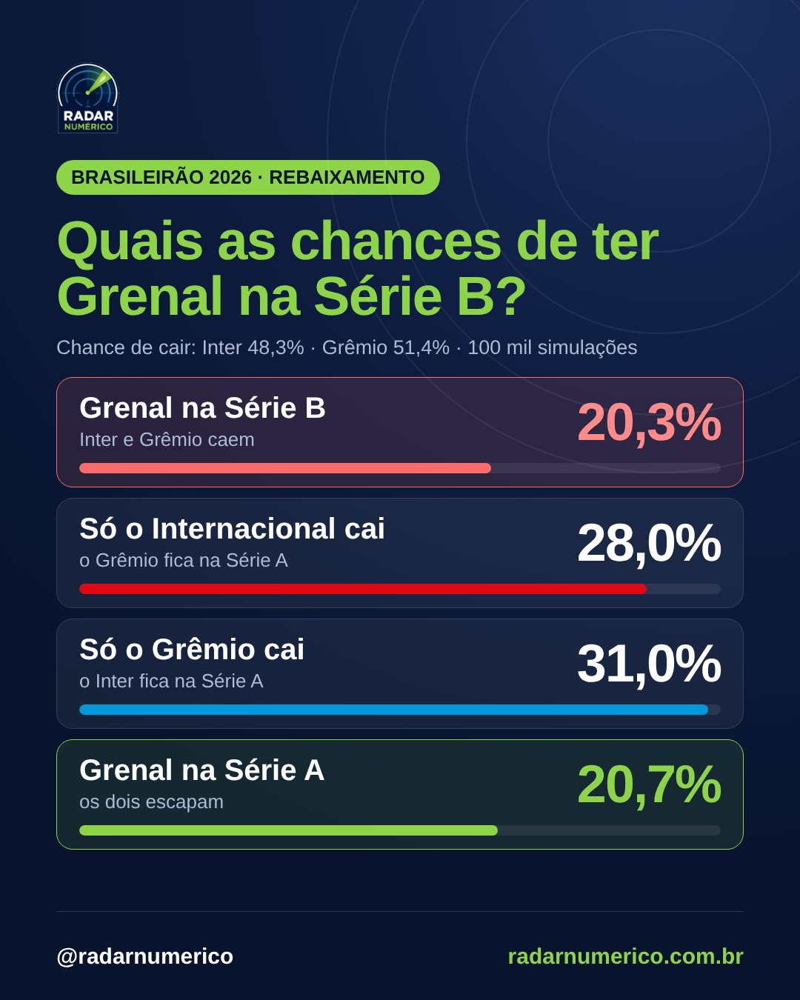

Grenal na Série B: chance de Inter e Grêmio caírem juntos é de 20%
Nas 100 mil simulações do modelo, Internacional (48,3%) e Grêmio (51,4%) são rebaixados juntos em 20,3%. O mais provável é que só um caia (59,0%), e a rodada 34 pode levar o Grenal na B de 7,2% a 33,2%.
Internacional e Grêmio chegam à reta final do Brasileirão brigando contra o rebaixamento ao mesmo tempo. O Inter é o 18º, com 35 pontos, e tem 48,3% de chance de cair; o Grêmio é o 15º, com 37, e tem 51,4%. A pergunta que o Rio Grande do Sul faz é se os dois podem cair juntos. Pelo modelo do Radar Numérico, sim: os dois são rebaixados em 20,3% das 100 mil simulações do restante do campeonato, cerca de uma em cada cinco.
Em outras 31,0%, só o Grêmio cai; em 28,0%, só o Inter; e em 20,7% os dois escapam. Ou seja, em 79,3% dos cenários pelo menos um dos dois joga a Série B em 2027. Os números já incluem Coritiba 2×0 Vitória, que fechou a rodada 33 neste sábado.

Por que não é só multiplicar
Multiplicar 48,3% por 51,4% daria 24,8%. O número real é menor porque as duas chances não são independentes. Chapecoense e Remo estão praticamente rebaixados, então sobram duas vagas no Z4 para os outros candidatos. Quando o Grêmio cai, ele ocupa uma delas, e a chance de o Inter cair também desce para 39,6%. Quando o Grêmio escapa, alguém precisa ocupar a vaga que ele deixou, e a chance colorada sobe para 57,5%. O mesmo vale ao contrário: o Grêmio cai em 42,1% das simulações em que o Inter cai e em 60,0% das que o Inter escapa.
Por isso o placar de hoje também mexeu com o Grenal: a vitória do Coritiba sobre o Vitória tirou o Coritiba da briga (de 20,9% para 4,5% de risco) e jogou o Vitória para dentro dela (de 15,3% para 24,7%). Com um concorrente a menos com chance real de cair, a chance de os dois gaúchos caírem juntos subiu de 18,5%, no retrato de sexta-feira, para 20,3%. Em 19 de outubro, depois da rodada 31, ela era de 37,0%; a recuperação do Grêmio desde então derrubou o número pela metade.
A rodada 34: Inter × Coritiba e Flamengo × Grêmio
Os dois jogam em dias seguidos. Na terça, o Internacional recebe o Coritiba no Beira-Rio, e o modelo dá 59% de chance de vitória colorada. Com ela, o Grenal na B cai para 14,9% e a chance do Inter cair, para 34,7%. Com empate, o Grenal na B vai a 26,2%; com derrota, a 30,7%, e o risco do Inter chega a 72,9%.
Na quarta, o Grêmio visita o Flamengo no Maracanã, e aí o cenário é o oposto: o Flamengo é favorito (75%), e a derrota gremista já está quase toda na conta de hoje. Se ela vier, o Grenal na B sobe só para 22,0%. Um empate o derruba para 18,0%, e uma vitória do Grêmio, que acontece em 7% das simulações, para 8,7%, com o risco gremista caindo de 51,4% para 20,4%.
Os dois jogos juntos
O cenário mais provável da rodada, com 44% de chance, é vitória do Inter e derrota do Grêmio: o Grenal na B fica em 16,0%. O pior para os dois, derrota colorada e derrota gremista, leva o número a 33,2%; o melhor, as duas vitórias, a 7,2%.
| Grêmio perde | Grêmio empata | Grêmio vence | |
|---|---|---|---|
| Inter vence | 16,0% 44% dos cenários | 13,6% 11% dos cenários | 7,2% 4% dos cenários |
| Inter empata | 28,6% 18% dos cenários | 22,5% 4% dos cenários | 9,6% 2% dos cenários |
| Inter perde | 33,2% 13% dos cenários | 27,6% 3% dos cenários | 12,7% 1% dos cenários |
Quem mais divide as vagas
Grêmio e Inter são, de longe, a dupla mais provável para acompanhar Chapecoense e Remo: aparecem juntos em 20,3% das simulações, o dobro da segunda colocada (Inter e Mirassol). Mirassol (31,2% de risco), Corinthians (26,3%) e Vitória (24,7%) são os outros que podem tirar a vaga dos gaúchos: Mirassol e Grêmio somam 37 pontos, o Corinthians tem 36 e o Vitória, 38, um a menos do que o Botafogo (8,0%).
O que vem depois
Depois da rodada 34, o Grêmio ainda recebe o Bahia (18/11), visita Santos (21/11) e Corinthians (28/11) e fecha em casa com o Mirassol (2/12). O Inter visita o Vasco (18/11), recebe Vitória (21/11) e Bragantino (28/11) e termina fora, contra o Cruzeiro (2/12). Dois jogos pesam mais para o Grenal na B: Corinthians × Grêmio, na rodada 37 (vitória do Corinthians leva o número a 26,7%; vitória do Grêmio, a 6,0%), e Grêmio × Mirassol, na última rodada (9,7% com vitória gremista e 33,6% com vitória do Mirassol).
Se acontecer, será inédito: o Grêmio caiu em 1991, 2004 e 2021, e o Internacional, em 2016, mas os dois nunca foram rebaixados no mesmo ano. A matriz "para quem torcer" da página de probabilidades mostra o efeito de cada jogo da rodada; os números deste artigo são o retrato de hoje, depois de Coritiba 2×0 Vitória.
Como calculamos: um algoritmo desenvolvido pelo economista Augusto Pellegrini estima a força de cada time e a probabilidade de cada placar dos jogos que faltam; a partir daí, 100 mil simulações do restante do campeonato dão as chances de cada posição na tabela. Fonte: Radar Numérico.
Números deste artigo: modelo atualizado em 31/10/2026 às 18h06, após Coritiba 2×0 Vitória.